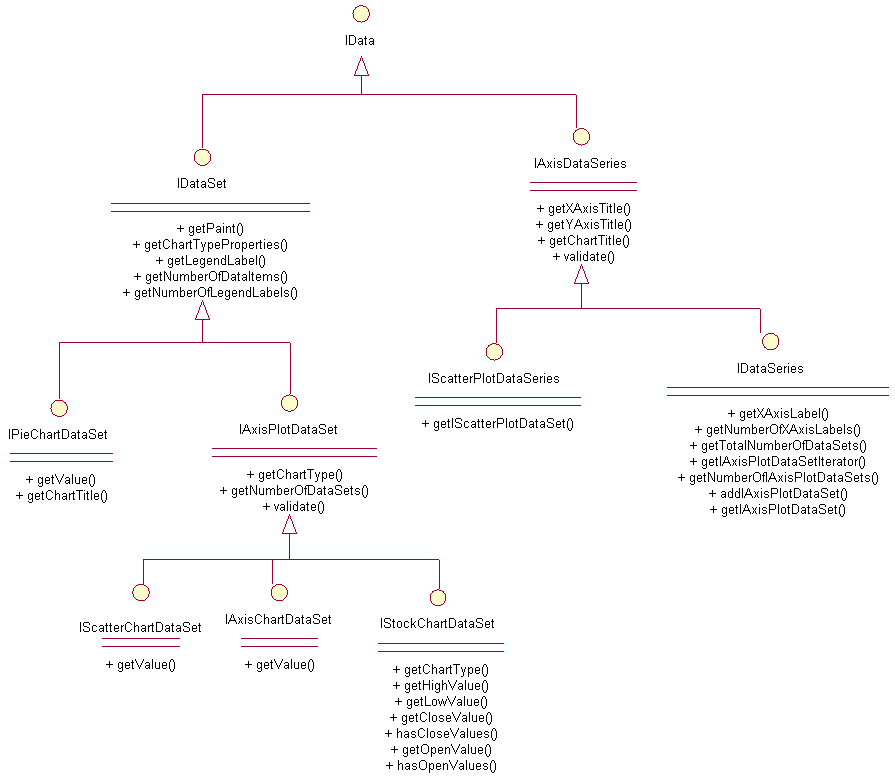

Data Interfaces
UML Diagram
Here is a diagram of the data interfaces jCharts uses. There are implementations of these interfaces in the org.jcharts.chartData package you can use. However, you are free to implement your own using the interfaces provided.
